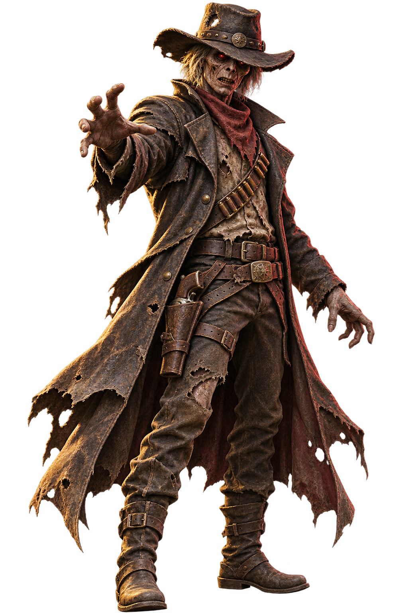
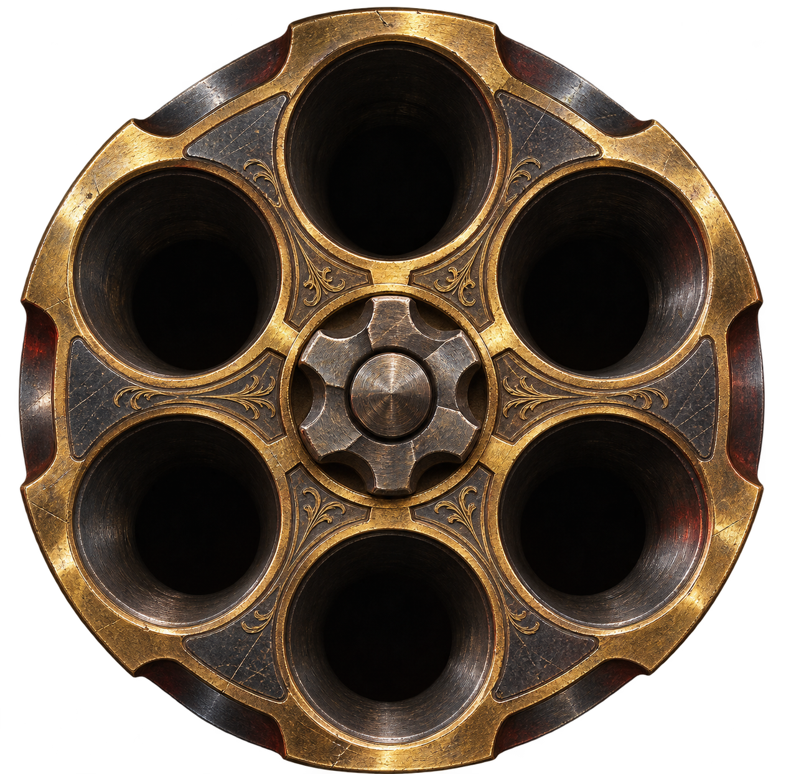
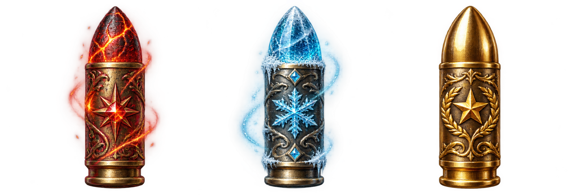

THE LAST SHOT每一格
每一格
都可能是最後一格。
走進門。看見目標。決定要不要扣下扳機。
6CHAMBERS
NEXT DECISION
選一扇門。
門後才會知道，你正在追什麼。
TWO DOORS · ONE SHOT
TARGET REVEALEDSUPPLY TARGET

12 STEPSYOU FOUND
01補給獵物
命中後，彈巢會得到新的選擇。
THE CHAMBER DECIDES
轉動。鎖定。開槍。

LOCKED CHAMBER?按下後才會揭曉
REWARD DRAW
命中後的下一個決定。
這不是結算，是下一步的籌碼。
+1×1.5+2×2+3×1.2

DRAW RESULT+2 NORMAL ROUNDS